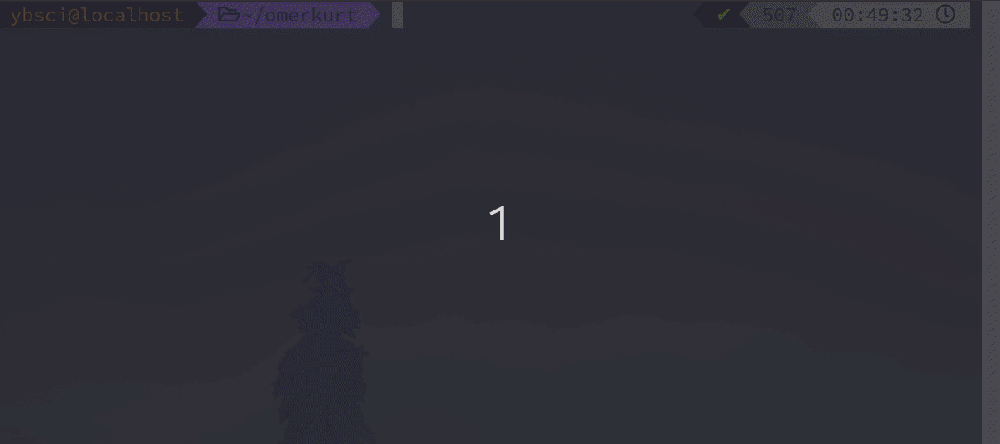

Whisper.cpp ve mpv
ile altyazı oluşturun
23-04-2024
Çok güzel bir mpv plugini keşfettim. Mpv player ile hangi dilde olursa olsun, kolayca altyazı oluşturun.
GPU Passthrough
QEMU/KVM
Kurulumu
17-01-2024
GPU passthrough bir GPU direkt olarak sanal makineye sunmasına yarayan bir tekniktir. Peki avantajı ne?
Neden
org-mode
14-01-2024
Neden org-mode markdown'a göre çok iyi? Benim için bir çok nedeni var ve sadece o nedenlerden birkaçını göstermem bile org-mode bakış açınızı değiştirecek. Markdown'a çok alıştık o da mükemmel araçlardan bir tanesi fakat org-mode kadar değil.
Fedora Silverblue
değişmeyen işletim
sistemi
10-05-2022
Fedora Silverblue kurduktan sonra normal Fedora'dan farkının olmadığını düşüneceksiniz ilk bakışta. Terminali açıp "dnf update" yazana kadar. Silverblue dağıtımı dnf paket yöneticisi ile gelmez. Onun yerine rpm-ostree paket yöneticisi ile gelir. rpm-ostree ile her güncelleme, kaldırma yada yükleme yaptıktan sonra sisteminizi yeniden başlatmanızı isteyecek, diğer dağıtımlardan sonra bu durum bana garip gelmişti. Flatpak yüklü olarak geliyor, Flatpak üzerinden istediğiniz uygulamayı yüklediğinizde tekrar başlatmanıza gerek yok sisteminizin.
Neden ZSH
kullanıyorum?
19-04-2020
 Bash kabuğunu uzun süre kullandıktan sonra Zsh geçme fikri vardı aklımda özellikle renklendirme, otomatik tamamlama gibi birçok eklentiye sahip Zsh kabuğundan bahsedeceğim.
 Bu yazımda sizlere Hugo ile blog kurmayı anlatacağım.
Bu yazımda sizlere Hugo ile blog kurmayı anlatacağım.
Android
Linux mu?
20-03-2020

Bu sorunun tam bir cevabı yok aslında, yazımdan da bahsedeceğim neden cevabı olmadığını. Birçok topluluk bu konu üzerinde çokça tartıştılar. Android’in bir Linux olup olmadığını anlamak için Linux’un ne olduğunu bilmeliyiz.